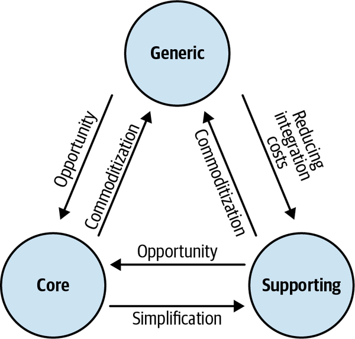
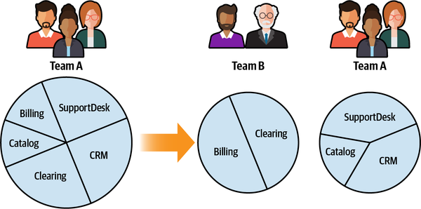
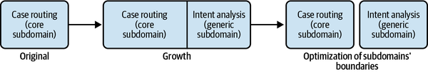

In the modern, fast-paced world we inhabit, companies cannot afford to be lethargic. To keep up with the competition, they have to continually change, evolve, and even reinvent themselves over time. We cannot ignore this fact when designing systems, especially if we intend to design software that’s well adapted to the requirements of its business domain. When changes are not managed properly, even the most sophisticated and thoughtful design will eventually become a nightmare to maintain and evolve. This chapter discusses how changes in a software project’s environment can affect design decisions and how to evolve the design accordingly. We will examine the four most common vectors of change: business domain, organizational structure, domain knowledge, and growth.
In Chapter 2, you’ve learned the three types of business subdomains and how they are different from one another:
In the previous chapters, you saw that the type of subdomain at play affects strategic and tactical design decisions:
How to design the bounded contexts’ boundaries
How to orchestrate integration between the contexts
Which design patterns to use to accommodate the complexity of the business logic
To design software that is driven by the business domain’s needs, it’s crucial to identify the business subdomains and their types. However, that’s not the whole story. It’s equally important to be alert to the evolution of the subdomains. As an organization grows and evolves, it’s not unusual for some of its subdomains to morph from one type to another. Let’s look at some examples of such changes.
Imagine that an online retail company called BuyIT has been implementing its own order delivery solution. It developed an innovative algorithm to optimize its couriers’ delivery routes and thus is able to charge lower delivery fees than its competitors.
One day, another company—DeliverIT—disrupts the delivery industry. It claims it has solved the “traveling salesman” problem and provides path optimization as a service. Not only is DeliverIT’s optimization more advanced, it is offered at a fraction of the price that it costs BuyIT to perform the same task.
From BuyIT’s perspective, once DeliverIT’s solution became available as an off-the-shelf product, its core subdomain turned into a generic subdomain. As a result, the optimal solution became available to all of BuyIT’s competitors. Without massive investments in research and development, BuyIT can no longer gain a competitive advantage in the path optimization subdomain. What was previously considered a competitive advantage for BuyIT has become a commodity available to all of its competitors.
Since its inception, BuyIT has been using an off-the-shelf solution to manage its inventory. However, its business intelligence reports are continuously showing inadequate predictions of its customers’ demands. Consequently, BuyIT fails to replenish its stock of the most popular products and is wasting warehouse real estate on the unpopular products. After evaluating a few alternative inventory management solutions, BuyIT’s management team makes the strategic decision to invest in designing and building an in-house system. This in-house solution will consider the intricacies of the products BuyIT sells and make better predictions of customers’ demands.
BuyIT’s decision to replace the off-the-shelf solution with its own implementation has turned inventory management from a generic subdomain into a core subdomain: successful implementation of the functionality will provide BuyIT additional competitive advantage over its competitors—the competitors will remain “stuck” with the generic solution and will not be able to use the advanced demand prediction algorithms invented and developed by BuyIT.
A real-life textbook example of a company turning a generic subdomain into a core subdomain is Amazon. Like all service providers, Amazon needed an infrastructure on which to run its services. The company was able to “reinvent” the way it managed its physical infrastructure and later even turned it into a profitable business: Amazon Web Services.
BuyIT’s marketing department implements a system for managing the vendors it works with and their contracts. There is nothing special or complex about the system—it’s just some CRUD user interfaces for entering data. In other words, it is a typical supporting subdomain.
However, a few years after BuyIT began implementing the in-house solution, an open source contracts management solution came out. The open source project implements the same functionality as the existing solution and has more advanced features, like OCR and full-text search. These additional features had been on BuyIT’s backlog for a long time but were never prioritized because of their low business impact. Hence, the company decides to ditch the in-house solution in favor of integrating the open source solution. In doing so, the document management subdomain turns from a supporting into a generic subdomain.
A supporting subdomain can also turn into a core subdomain—for example, if a company finds a way to optimize the supporting logic in such a way that it either reduces costs or generates additional profits.
The typical symptom of such a transformation is the increasing complexity of the supporting subdomain’s business logic. Supporting subdomains, by definition, are simple, mainly resembling CRUD interfaces or ETL processes. However, if the business logic becomes more complicated over time, there should be a reason for the additional complexity. If it doesn’t affect the company’s profits, why would it become more complicated? That’s accidental business complexity. On the other hand, if it enhances the company’s profitability, it’s a sign of a supporting subdomain becoming a core subdomain.
A core subdomain can, over time, become a supporting subdomain. This can happen when the subdomain’s complexity isn’t justified. In other words, it’s not profitable. In such cases, the organization may decide to cut the extraneous complexity, leaving the minimum logic needed to support implementation of other subdomains.
Finally, for the same reason as a core subdomain, a generic subdomain can turn into a supporting one. Going back to the example of BuyIT’s document management system, assume the company has decided that the complexity of integrating the open source solution doesn’t justify the benefits and has resorted back to the in-house system. As a result, the generic subdomain has turned into a supporting subdomain.
The changes in subdomains we just discussed are demonstrated in Figure 11-1.

A change in a subdomain’s type directly affects its bounded context and, consequently, corresponding strategic design decisions. As you learned in Chapter 4, different bounded context integration patterns accommodate the different subdomain types. The core subdomains have to protect their models by using anticorruption layers and have to protect consumers from frequent changes in the implementation models by using published languages (OHS).
Another integration pattern that is affected by such changes is the separate ways pattern. As you saw earlier, teams can use this pattern for supporting and generic subdomains. If the subdomain morphs into a core subdomain, duplicating its functionality by multiple teams is no longer acceptable. Hence, the teams have no choice but to integrate their implementations. The customer–supplier relationship will make the most sense in this case, since the core subdomain will only be implemented by one team.
From an implementation strategy standpoint, core and supporting subdomains differ in how they can be implemented. Supporting subdomains can be outsourced or used as “training wheels” for new hires. Core subdomains must be implemented in-house, as close as possible to the sources of domain knowledge. Therefore, when a supporting subdomain turns into a core subdomain, its implementation should be moved in-house. The same logic works the other way around. If a core subdomain turns into a supporting subdomain, it’s possible to outsource the implementation to let the in-house R&D teams concentrate on the core subdomains.
The main indicator of a change in a subdomain’s type is the inability of the existing technical design to support current business needs.
Let’s go back to the example of a supporting subdomain becoming a core subdomain. Supporting subdomains are implemented with relatively simple design patterns for modeling the business logic: namely, the transaction script or active record pattern. As you saw in Chapter 5, these patterns are not a good fit for business logic involving complex rules and invariants.
If complicated rules and invariants are added to the business logic over time, the codebase will become increasingly complex as well. It will be painful to add the new functionality, as the design won’t support the new level of complexity. This “pain” is an important signal. Use it as a call to reassess the business domain and design choices.
The need for change in the implementation strategy is nothing to fear. It’s normal. We cannot foresee how a business will evolve down the road. We also cannot apply the most elaborate design patterns for all types of subdomains; that would be wasteful and ineffective. We have to choose the most appropriate design and evolve it when needed.
If the decision for how to model the business logic is made consciously, and you are aware of all the possible design choices and the differences between them, migrating from one design pattern to another is not that troublesome. The following subsections highlight a few examples.
At their core, both the transaction script and active record patterns are based on the same principle: the business logic is implemented as a procedural script. The difference between them is how the data structures are modeled: the active record pattern introduces the data structures to encapsulate the complexity of mapping them to the storage mechanism.
As a result, when working with data becomes challenging in a transaction script, refactor it into the active record pattern. Look for complicated data structures and encapsulate them in active record objects. Instead of accessing the database directly, use active records to abstract its model and structure.
If the business logic that manipulates active records becomes complex and you notice more and more cases of inconsistencies and duplications, refactor the implementation to the domain model pattern.
Start by identifying value objects. What data structures can be modeled as immutable objects? Look for the related business logic, and make it a part of the value objects as well.
Next, analyze the data structures and look for transactional boundaries. To ensure that all state-modifying logic is explicit, make all of the active records’ setters private so that they can only be modified from inside the active record itself. Obviously, expect the compilation to fail; however, the compilation errors will make it clear where the state-modifying logic resides. Refactor it into the active record’s boundaries. For example:
publicclassPlayer{publicGuidId{get;set;}publicintPoints{get;set;}}publicclassApplyBonus{...publicvoidExecute(GuidplayerId,bytepercentage){varplayer=_repository.Load(playerId);player.Points*=1+percentage/100.0;_repository.Save(player);}}
In the following code, you can see the first steps toward the transformation. The code won’t compile yet, but the errors will make it explicit where external components are controlling the object’s state:
publicclassPlayer{publicGuidId{get;privateset;}publicintPoints{get;privateset;}}publicclassApplyBonus{...publicvoidExecute(GuidplayerId,bytepercentage){varplayer=_repository.Load(playerId);player.Points*=1+percentage/100.0;_repository.Save(player);}}
In the next iteration, we can move that logic inside the active record’s boundary:
publicclassPlayer{publicGuidId{get;privateset;}publicintPoints{get;privateset;}publicvoidApplyBonus(intpercentage){this.Points*=1+percentage/100.0;}}
When all the state-modifying business logic is moved inside the boundaries of the corresponding objects, examine what hierarchies are needed to ensure strongly consistent checking of business rules and invariants. Those are good candidates for aggregates. Keeping in mind the aggregate design principles we discussed in Chapter 6, look for the smallest transaction boundaries, that is, the smallest amount of data that you need to keep strongly consistent. Decompose the hierarchies along those boundaries. Make sure the external aggregates are only referenced by their IDs.
Finally, for each aggregate, identify its root, or the entry point for its public interface. Make the methods of all the other internal objects in the aggregate private and only callable from within the aggregate.
Once you have a domain model with properly designed aggregate boundaries, you can transition it to the event-sourced model. Instead of modifying the aggregate’s data directly, model the domain events needed to represent the aggregate’s lifecycle.
The most challenging aspect of refactoring a domain model into an event-sourced domain model is the history of the existing aggregates: migrating the “timeless” state into the event-based model. Since the fine-grained data representing all the past state changes is not there, you have to either generate past events on a best-effort basis or model migration events.
This approach entails generating an approximate stream of events for each aggregate so that the stream of events can be projected into the same state representation as in the original implementation. Consider the example you saw in Chapter 7, as represented in Table 11-1.
| lead-id | first-name | last-name | phone_number | status | last-contacted-on | order-placed-on | converted-on | followup-on |
|---|---|---|---|---|---|---|---|---|
| 12 | Shauna | Mercia | 555-4753 | converted | 2020-05-27T12:02:12.51Z | 2020-05-27T12:02:12.51Z | 2020-05-27T12:02:12.51Z | null |
We can assume from the business logic perspective that the instance of the aggregate has been initialized; then the person has been contacted, an order has been placed, and finally, since the status was “converted,” the payment for the order has been confirmed. The following set of events can represent all of these assumptions:
{"lead-id":12,"event-id":0,"event-type":"lead-initialized","first-name":"Shauna","last-name":"Mercia","phone-number":"555-4753"},{"lead-id":12,"event-id":1,"event-type":"contacted","timestamp":"2020-05-27T12:02:12.51Z"},{"lead-id":12,"event-id":2,"event-type":"order-submitted","payment-deadline":"2020-05-30T12:02:12.51Z","timestamp":"2020-05-27T12:02:12.51Z"},{"lead-id":12,"event-id":3,"event-type":"payment-confirmed","status":"converted","timestamp":"2020-05-27T12:38:44.12Z"}
When applied one by one, these events can be projected into the exact state representation as in the original system. The “recovered” events can be easily tested by projecting the state and comparing it to the original data.
However, it’s important to keep in mind the disadvantage of this approach. The goal of using event sourcing is to have a reliable, strongly consistent history of the aggregates’ domain events. When this approach is used, it’s impossible to recover the complete history of state transitions. In the preceding example, we don’t know how many times the sales agent has contacted the person, and therefore, how many “contacted” events we have missed.
The alternative approach is to acknowledge the lack of knowledge about past events and explicitly model it as an event. Instead of recovering the events that may have led to the current state, define a migration event and use it to initialize the event streams of existing aggregate instances:
{"lead-id":12,"event-id":0,"event-type":"migrated-from-legacy","first-name":"Shauna","last-name":"Mercia","phone-number":"555-4753","status":"converted","last-contacted-on":"2020-05-27T12:02:12.51Z","order-placed-on":"2020-05-27T12:02:12.51Z","converted-on":"2020-05-27T12:38:44.12Z","followup-on":null}
The advantage of this approach is that it makes the lack of past data explicit. At no stage can someone mistakenly assume that the event stream captures all of the domain events that happened during the aggregate instance’s lifecycle. The disadvantage is that the traces of the legacy system will remain in the event store forever. For example, if you are using the CQRS pattern (and with the event-sourced domain model you most likely will), the projections will always have to take into account the migration events.
Another type of change that can affect a system’s design is a change in the organization itself. Chapter 4 looked at different patterns of integrating bounded contexts: partnership, shared kernel, conformist, anticorruption layer, open-host service, and separate ways. Changes in the organization’s structure can affect teams’ communication and collaboration levels and, as a result, the ways the bounded contexts should be integrated.
A trivial example of such change is growing development centers, as shown in Figure 11-2. Since a bounded context can be implemented by only one team, adding new development teams can cause the existing wider bounded context boundaries to split into smaller ones so that each team can work on its own bounded context.

Moreover, the organization’s development centers are often located in different geographical locations. When the work on the existing bounded contexts is shifted to another location, it may negatively impact the teams’ collaboration. As a result, the bounded contexts’ integration patterns have to evolve accordingly, as described in the following scenarios.
The partnership pattern assumes there is strong communication and collaboration among teams. As time goes by, that might cease to be the case; for example, when work on one of the bounded contexts is moved to a distant development center. Such a change will negatively affect the teams’ communication, and it may make sense to move away from the partnership pattern toward a customer–supplier relationship.
Unfortunately, it’s not uncommon for teams to have severe communication problems. The issues might be caused by geographical distance or organizational politics. Such teams may experience more and more integration issues over time. At some point, it may become more cost-effective to duplicate the functionality instead of continuously chasing one another’s tails.
As you’ll recall, the core tenet of domain-driven design is that domain knowledge is essential for designing a successful software system. Acquiring domain knowledge is one of the most challenging aspects of software engineering, especially for the core subdomains. A core subdomain’s logic is not only complicated, but also expected to change often. Moreover, modeling is an ongoing process. Models have to improve as more knowledge of the business domain is acquired.
Many times, the business domain’s complexity is implicit. Initially, everything seems simple and straightforward. The initial simplicity is often deceptive and it quickly morphs into complexity. As more functionality is added, more and more edge cases, invariants, and rules are discovered. Such insights are often disruptive, requiring rebuilding the model from the ground up, including the boundaries of the bounded contexts, aggregates, and other implementation details.
From a strategic design standpoint, it’s a useful heuristic to design the bounded contexts’ boundaries according to the level of domain knowledge. The cost of decomposing a system into bounded contexts that, over time, turn out to be incorrect can be high. Therefore, when the domain logic is unclear and changes often, it makes sense to design the bounded contexts with broader boundaries. Then, as domain knowledge is discovered over time and changes to the business logic stabilize, those broad bounded contexts can be decomposed into contexts with narrower boundaries, or microservices. We will discuss the interplay between bounded contexts and microservices in more detail in Chapter 14.
When new domain knowledge is discovered, it should be leveraged to evolve the design and make it more resilient. Unfortunately, changes in domain knowledge are not always positive: domain knowledge can be lost. As time goes by, documentation often becomes stale, people who were working on the original design leave the company, and new functionality is added in an ad hoc manner until, at one point, the codebase gains the dubious status of a legacy system. It’s vital to prevent such degradation of domain knowledge proactively. An effective tool for recovering domain knowledge is the EventStorming workshop, which is the topic of the next chapter.
Growth is a sign of a healthy system. When new functionality is continuously added, it’s a sign that the system is successful: it brings value to its users and is expanded to further address users’ needs and keep up with competing products. But growth has a dark side. As a software project grows, its codebase can grow into a big ball of mud:
A big ball of mud is a haphazardly structured, sprawling, sloppy, duct-tape-and-baling-wire, spaghetti-code jungle. These systems show unmistakable signs of unregulated growth, and repeated, expedient repair.
Brian Foote and Joseph Yoder1
The unregulated growth that leads to big balls of mud results from extending a software system’s functionality without re-evaluating its design decisions. Growth blows up the components’ boundaries, increasingly extending their functionality. It’s crucial to examine the effects of growth on design decisions, especially since many domain-driven design tools are all about setting boundaries: business building blocks (subdomains), model (bounded contexts), immutability (value objects), or consistency (aggregates).
The guiding principle for dealing with growth-driven complexity is to identify and eliminate accidental complexity: the complexity caused by outdated design decisions. The essential complexity, or inherent complexity of the business domain, should be managed using domain-driven design tools and practices.
When we discuss DDD in earlier chapters, we follow the process of first analyzing the business domain and its strategic components, designing the relevant models of the business domain, and then designing and implementing the models in code. Let’s follow the same script for dealing with growth-driven complexity.
As we discussed in Chapter 1, the subdomains’ boundaries can be challenging to identify, and as a result, instead of striving for boundaries that are perfect, we must strive for boundaries that are useful. That is, the subdomains should allow us to identify components of different business value and use the appropriate tools to design and implement the solution.
As the business domain grows, the subdomains’ boundaries can become even more blurred, making it harder to identify cases of a subdomain spanning multiple, finer-grained subdomains. Hence, it’s important to revisit the identified subdomains and follow the heuristic of coherent use cases (sets of use cases working on the same set of data) to try to identify where to split a subdomain (see Figure 11-3).

If you are able to identify finer-grained subdomains of different types, this is an important insight that will allow you to manage the business domain’s essential complexity. The more precise the information about the subdomains and their types is, the more effective you will be at choosing technical solutions for each subdomain.
Identifying inner subdomains that can be extracted and made explicit is especially important for core subdomains. We should always aim to distill core subdomains as much as possible from all others so that we can invest our effort where it matters most from a business strategy perspective.
In Chapter 3, you learned that the bounded context pattern allows us to use different models of the business domain. Instead of building a “jack of all trades, master of none” model, we can build multiple models, each focused on solving a specific problem.
As a project evolves and grows, it’s not uncommon for the bounded contexts to lose their focus and accumulate logic related to different problems. That’s accidental complexity. As with subdomains, it’s crucial to revisit the bounded contexts’ boundaries from time to time. Always look for opportunities to simplify the models by extracting bounded contexts that are laser focused at solving specific problems.
Growth can also make existing implicit design issues explicit. For example, you may notice that a number of bounded contexts become increasingly “chatty” over time, unable to complete any operation without calling another bounded context. That can be a strong signal of an ineffective model and should be addressed by redesigning the bounded contexts’ boundaries to increase their autonomy.
When we discussed the domain model pattern in Chapter 6, we used the following guiding principle for designing aggregates’ boundaries:
The rule of thumb is to keep the aggregates as small as possible and include only objects that are required to be in a strongly consistent state by the business domain.
As the system’s business requirements grow, it can be “convenient” to distribute the new functionalities among the existing aggregates, without revisiting the principle of keeping aggregates small. If an aggregate grows to include data that is not needed to be strongly consistent by all of its business logic, again, that’s accidental complexity that has to be eliminated.
Extracting business functionality into a dedicated aggregate not only simplifies the original aggregate, but potentially can simplify the bounded context it belongs to. Often, such refactoring uncovers an additional hidden model that, once made explicit, should be extracted into a different bounded context.
As Heraclitus famously said, the only constant in life is change. Businesses are no exception. To stay competitive, companies constantly strive to evolve and reinvent themselves. Those changes should be treated as first-class elements of the design process.
As the business domain evolves, changes to its subdomains must be identified and acted on in the system’s design. Make sure your past design decisions are aligned with the current state of the business domain and its subdomains. When needed, evolve your design to better match the current business strategy and needs.
It’s also important to recognize that changes in the organizational structure can affect communication and cooperation among teams and the ways their bounded contexts can be integrated. Learning about the business domain is an ongoing process. As more domain knowledge is discovered over time, it has to be leveraged to evolve strategic and tactical design decisions.
Finally, software growth is a desired type of change, but when it is not managed correctly, it may have disastrous effects on the system design and architecture. Therefore:
When a subdomain’s functionality is expanded, try to identify more finer-grained subdomain boundaries that will enable you to make better design decisions.
Don’t allow a bounded context to become a “jack of all trades.” Make sure the models encompassed by bounded contexts are focused to solve specific problems.
Make sure your aggregates’ boundaries are as small as possible. Use the heuristic of strongly consistent data to detect possibilities to extract business logic into new aggregates.
My final words of wisdom on the topic are to continuously check the different boundaries for signs of growth-driven complexity. Act to eliminate accidental complexities, and use domain-driven design tools to manage the business domain’s essential complexity.
What kind of changes in bounded context integration are often caused by organizational growth?
Partnership to customer–supplier (conformist, anticorruption layer, or open-host service)
Anticorruption layer to open-host service
Conformist to shared kernel
Open-host service to shared kernel
Assume that the bounded contexts’ integration shifts from a conformist relationship to separate ways. What information can you deduce based on the change? Select all that apply.
The development teams struggled to cooperate.
The duplicate functionality is either a supporting or a generic subdomain.
The duplicate functionality is a core subdomain.
What are the indicators for when a supporting subdomain should become a core subdomain? Select all that apply.
It becomes easier to evolve the existing model and implement the new requirements.
It becomes painful to evolve the existing model.
The subdomain changes at a higher frequency.
What change results from discovering a new business opportunity? Select all that apply.
A supporting subdomain turns into a core one.
A supporting subdomain turns into a generic one.
A generic subdomain turns into a core one.
A generic subdomain turns into a supporting one.
What change in the business strategy could turn one of WolfDesk’s (the fictitious company described in the Preface) generic subdomains into a core subdomain?
Switching to a managed service for identifying fraud attempts, instead of using a proprietary solution.
Upon reaching a certain level of growth, WolfDesk could follow the footsteps of Amazon and implement its own compute platform to further optimize its ability to scale elastically and optimize its infrastructure costs.
Hiring outsourced support agents.
1 Brian Foote and Joseph Yoder. Big Ball of Mud. Fourth Conference on Patterns Languages of Programs (PLoP ’97/EuroPLoP ’97), Monticello, Illinois, September 1997.